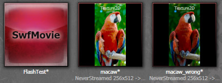
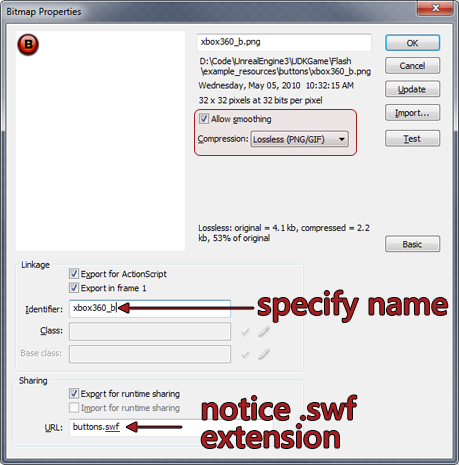
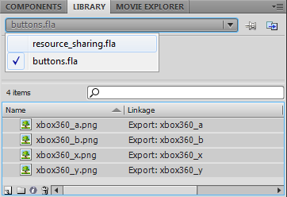

UDN
Search public documentation:
ScaleformImport
日本語訳
中国翻译
한국어
Interested in the Unreal Engine?
Visit the Unreal Technology site.
Looking for jobs and company info?
Check out the Epic games site.
Questions about support via UDN?
Contact the UDN Staff
中国翻译
한국어
Interested in the Unreal Engine?
Visit the Unreal Technology site.
Looking for jobs and company info?
Check out the Epic games site.
Questions about support via UDN?
Contact the UDN Staff
Scaleform GFx Import Pipeline
Overview
Importing .SWFs into Unreal Engine 3
In order to import .SWF files into Unreal Engine 3 they must be located in a directory within the
GameDir\Flash folder. For example, in UDKGame a valid location for a .SWF file would be C:\UDK\UDK-2010-07\UDKGame\Flash\example\SomeFile.SWF. Unreal Engine 3 will use the location of the file to determine the package, group and name of the asset during import. For instance C:\UDK\UDK-2010-07\UDKGame\Flash\example\SomeFile.swf would be imported as SwfMovie'example.SomeFile'.
Further examples:
| Source File | Imports As |
|---|---|
C:\UDK\UDK-2010-07\UDKGame\Flash\MyPackage\MyGroup\A.swf | SwfMovie'MyPackage.MyGroup.A' |
C:\UDK\UDK-2010-07\UDKGame\Flash\Pkg\Group_0\Group_1\B.swf | SwfMovie'Pkg.Group_0.Group_1.B' |
Import Options
The import dialog provides options you may set which affect how a .SWF file and its associated assets are imported into Unreal Engine 3.- Set sRGB On Imported Textures
- If enabled, marks imported textures as sRGB.
- Pack Textures
- If enabled, Unreal Engine 3 will pack small textures into larger texture atlases, and use UV offsets to reference individual textures.
- Pack Texture Size
- Maximum size of packed textures, if the pack textures option is enabled.
- Texture Rescale
- This allows you to select how textures are scaled upon import.
Method Description FlashTextureScale_High Textures that are not currently a power of two will be scaled up to the next highest power of two during import FlashTextureScale_Low Textures that are not currently a power of two will be scaled down to the next lowest power of two during import FlashTextureScale_NextLow Textures that are not currently a power of two will be scaled down to the next, next lowest power of two during import (e.g a 100x60 texture would become 32x16 instead of 64x32) FlashTextureScale_Mult4 Textures will be scaled to be a multiple of four during import. This option allows the use of non power of two textures FlashTextureScale_None Textures will not be scaled at all during import, so it is up to the user to make sure all of their textures are correct (at least a multiple of four). This option allows the use of non-power of two textures
gfximport Commandlet
To improve iteration time, the gfximport commandlet, run from your Unreal Engine 3 executable (e.g UDKLift.exe) allows for content importing and reimporting without loading Unreal Editor. The commandlet assumes that content has been arranged in the manner described above. In order to import a file, you must run gfximport commandlet while specifying relative paths to all of the .SWF files within theGameDir\Flash directory that you wish to import separated by spaces.
UDKLift.exe gfximport [path_1] [path_2] [path_3]
UDKLift.exe gfximport
Example
Suppose you want to import these files.- C:\UDK\UDK-2010-07\UDKGame\Flash\UI\MainMenu.swf
- C:\UDK\UDK-2010-07\UDKGame\Flash\UI\Resources.swf
UDKLift.exe gfximport UI/MainMenu.swf UI/Resources.swf
GameDir\Content\GFx\UI.upk.
Importing using the Content Browser
- In Unreal Editor, open the Content Browser.
- At the bottom left hand side of the Content Browser, click on the import button.
- Navigate to your file location, and select the .SWF movie(s) you wish to import and click Open.
GameDir\Flash directory.
During the import process, all textures used by the .SWF files will be imported as textures into the package you specified. Unreal Editor will attempt to find the original .PNG texture based on the linkage identifier. Unreal Editor will warn you about any textures that cannot be found.
macaw.png, which will produce the desired result despite looking overly bright. Macaw_wrong.png has the sRGB flag turned on; it appears correct in the Content Browser but will be too dark in the rendered output.

When authoring content, also ensure that all textures within your .FLA Library are set to Lossless (PNG/GIF) compression in their properties. If this is not the case, there will be some artifacts and undesirable colors translated to the texture in engine due to the JPEG compression. Only the standalone flash player will be affected by this, as Unreal Editor will import textures from the original .PNG files. Make sure that Allow Smoothing is checked in texture properties if you plan to scale the texture. Otherwise, the scaled texture will appear very pixelated.
Importing textures into Flash
- Always save your textures as .PNG files
- All the textures must be placed in a sibling folder with the same name as the .swf file that you export.
- For example, suppose you are working on a file called
import_example.fla.C:\UDK\UDK-2010-07\UDKGame\Flash\example\import_example.fla <-- The document you are editing C:\UDK\UDK-2010-07\UDKGame\Flash\example\import_example.swf <-- The swf you are exporting C:\UDK\UDK-2010-07\UDKGame\Flash\example\import_example\background.png / C:\UDK\UDK-2010-07\UDKGame\Flash\example\import_example\UDK_Logo.png <-- Where UE3 expects to find your textures! C:\UDK\UDK-2010-07\UDKGame\Flash\example\import_example\udk_panel_01.png \
- For example, suppose you are working on a file called
- The Linkage Identifier of every file will tell UE3 where to find the original artwork. So set the Linkage ID:
- In the library panel, locate the resource of the texture that you want to change. NOTE: This is not the instance, but the resource. It should have a little icon of a tree next to it .
- Right-click the desired resource, and select Properties.
- Under the Linkage section, check both the Export for ActionScript and the Export in frame 1 checkboxes.
- Give the texture a unique identifier. It must be the name of the corresponding source file without the extension. (e.g. background)
Dealing with texture compression issues
For textures that rely on strong lines or gradients, texture compression can sometimes ruin these textures. This can be resolved in a few ways.- Ensure that the texture's LOD group is set to UI.
- Double check the UI LOD group's settings in your
Engine.inifile. If the Bias is set to anything other than 0, it will force Unreal Engine 3 to use a different mip map of the texture. - Disable mip maps for these textures.
 This will disable texture streaming, but only do this for UI textures!
This will disable texture streaming, but only do this for UI textures!
- Try splitting up the textures to improve colors. Because compression typically blurs textures, this can also cause color distortion. By simply layering elements instead of using a single texture, this can help to improve the overall color.
- Experiment with non bilinear scaled textures. If you require the use of very straight and accurate texturing then some of these artifacts will be amplified by bilinear filtering done with scaled textures in game. Thus experimenting with non bilinear scaled textures may be worthwhile to improve visual quality.
- Experiment with the texture compression methods within Unreal Editor. Sometimes using something other than TC_Default may divert more resources towards different texture channels that could be useful. This may however alter the compression settings which may lead to more memory being used.
- If parts of the textures are very dark, it may be resolved by inverting the colors and then setting the brightness of the texture clip within Flash to a negative value (e.g. -100) or by tinting it black. This may resolve green and/or purple compression artifacts that occurring in the dark parts of your texture.
- If parts of the textures have alpha, and texture compression is causing less than desirable results, then authoring the movieclips with alpha in mind will help to alleviate those issues. Save the texture without the alpha channel will usually improve visual quality in the textures.
- If all else fails try doubling the resolution of these textures to reduce the overall impact of texture compression.
Resource sharing
The most common form of resource sharing is using a .SWF file as a library of textures which are in turn used by other .SWF files. For example, you may have a .SWF with a set of all textures used by menus in your game; the various menus can refer to those textures in order to avoid content duplication. Please refer to the example files
UDKGame/Flash/example_resources/buttons.fla and UDKGame/Flash/example/uses_resources.fla
This example of resource sharing demonstrates asset sharing between different SwfMovies as well as different packages. Notice that buttons.swf is located in the example_resources/ directory, which will result in it being imported into example_resources.upk. Meanwhile, example/uses_resources.swf is in example/, and will be imported into example.upk.
Export for run time sharing
The first step is to create the .SWF that will serve up the textures to other .SWF files. In this example, this role is delegated to buttons.swf.- Import the texture into the library as you usually would.
- Right-click the resource and choose Properties.
- Make sure that:
- Allow smoothing is checked.
- Compression is set to Lossless (PNG\GIF). Using JPEG will result in
Error: Jpeg System is not installed - can't load jpeg image data. - The identifier field matches the name of the PNG file you are using for this asset (minus the file extension).
- Make sure Export for runtime sharing is checked.
- The URL field must be the name of the .SWF file that you will export (e.g. buttons.swf)
 - Verify that the Identifier field does not contain any periods!
Import for runtime Sharing
Importing for runtime sharing is demonstrated inexample/resource_sharing.swf.
- Make sure both
buttons.flaand resource_sharing.fla are open in your Flash content creation package. - Under the Library tab, select
buttons.fla. You should now see the texture resources available inbuttons.fla.
 - Select the resources you wish to share; then right-click and choose Copy to copy them.
- Switch the library to
resource_sharing.fla. - Right-click and choose Paste to paste the textures into the library.
- Right-click each of the new resources and choose Properties to adjust the texture settings for the newly-imported textures:
- Check that Identifier is set correctly.
- Check that Import for runtime sharing is checked.
- Change the URL field to be the relative path to the .SWF containing the resource. In this example the path is
..\example_resources\buttons.swf.
Dependencies
There is no good tool to do accounting for batching or dependencies. If you have multiple SWFs that depend on each other, you can use the import commandlet and specify each SWF to import so they all get imported accordingly.
Other texture pipeline notes
- Avoid using vector gradients within Adobe Flash Studio via their vector Gradient fill methods. If you need a gradient, make a bitmap! The reason for this, is how the gradient is then exported once you import the .SWF into Unreal Engine 3. It creates multiple textures for that gradient, which is very inefficient! Avoid using vector gradients at all costs, just create a bitmap gradient instead.
- CLIK Buttons use Scale9 to adjust their sizes based on the width of the text. The button instance itself is resized, so any content within the instance will appear distorted. If you are having undesirable results, you can make enough room for localized text, or adjust your art accordingly to fit closer to the bounds of the initial text.
- When working with CLIK components, always make sure the movieclip has its property and component definition pointing to the right class. Both of these class definitions will be the same, but you need to set it in two locations.
- Always ensure the identifier name is set properly. For example when working with ScrollingLists; the identifier of the ListItemRenderer is what the ScrollingList uses to draw objects in the list. This can cause headaches, bugs and frustrations when something doesn't work.
- Where possible always use power of two textures. While non power of two textures are supported in GFx, Unreal Engine 3 does not currently support them, and will scale your textures up to the nearest power of two. This can cause larger files, distortion and undesirable artifacts. Keeping texture sizes consistent and working only with power of two textures will make sure this is never a problem.
- Multiple layered masks and masking has a negative effect on performance. Keep masks simple!
- Maintain proper hierarchy within the CLIK components when possible. It is possible that you would want to animate the textField within a button component, and need to place it in a movieclip. If this is the case, you will need to push its text property back up to the parent within the movieclip:
- Using
gfx.controls.button, moved a textField frombuttonName_mc.textFieldtobuttonName_mc.textAnim_mc.textField - The following should be placed as ActionScript in textAnim_mc instance: This assigns the value of the parent's CLIK label property to the text property of the text field.
img_pressStart.textField.text = _parent._label;
- Using
- Ensure that render target textures are smaller than the frame buffer to ensure visual parity on consoles.